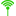
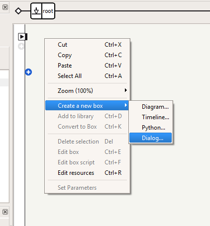
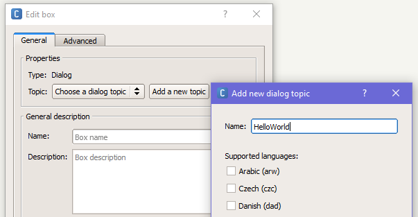
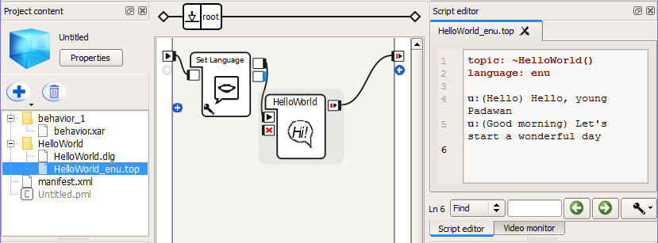
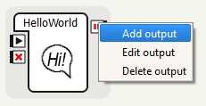
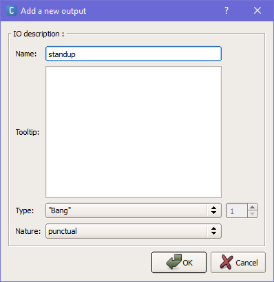
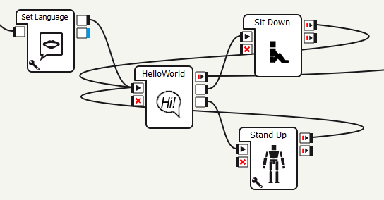
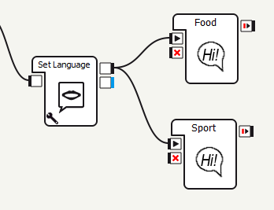

Урок 2: Введение в QiChat
Цель работы¶
Цель данной работы — научиться программировать Nao на скриптовом языке QiChat в Choregraphe таким образом, чтобы работ мог выполнять действия в зависимости от условий, в том числе воспроизводять анимацию.
Теория¶
Язык QiChat позволяет писать Dialog Topic — скрипты для Nao, с помощью которых можно задавать его поведение в виде диалога между пользователем и роботом. Мы будем создавать и запускать эти скрипты в программе Choregraphe.
Общие сведения¶
Тема¶
Тема — это скрипт, файл с расширением .top, расположенный в текущем
проекте и включающий в себя правила. Её заголовок должен содержать как минимум
название диалога и его язык. Например:
1 2 3 | topic: ~introduction () language: enu u:(hello) hello human |
Заголовок — это первые две строки, topic: ~introduction () и language:
*enu, где первая задаёт тему диалога, а вторая указывает, что разговор будет
вестись на английском языке (русский язык обозначается rur, весь список
поддерживаемых языков можно посмотреть на сайте ‼ссылка). Последняя строчка –
скрипт из одного правила, согласно которому в ответ на сказанное человеком
hello робот должен ответить hello human.
Правило¶
Правила соотносят вводные данные от человека (то, что он говорит) с выходными
данными робота (то, что робот отвечает или делает). Правила начинаются с новой
строки и индикатора u:. Далее в круглых скобках указываются слова человека, а
вне их — ответ робота.
При помощи разделителей, специальных символов, а также функций и свойств можно создавать мощные правила, которые в одной строке будут учитывать множество разных случаев. О них будет сказано далее.
В примере выше был представлен пример простого правила, которое конкретной фразе
человека (hello) сопоставляет конкретный ответ робота (hello human). Помимо
простых правил, существуют ещё два вида: подправила и инструкции.
Подправило¶
Подправила позволяют создавать несколько контекстов в рамках одной беседы, при этом конкретные подправила активируются только в том случае, если активировано соответствующее (т.е. более высокого уровня) пользовательское правило или инструкция.
1 2 3 4 5 6 7 8 9 10 | u:(input1) answer1
u1:(input2) answer2
u1:(input3) answer3
u2:(input4) answer4
u3:(input5) answer5
u2:(input6) answer6
proposal: sentence
u1:(input7) answer
u1:(input8) answer
|
Здесь u1:, u2: и u3: — пользовательские подправила. Отступы отражают
отношения между правилами и их подправилами.
Особенности¶
Во-первых, пользовательские правила и инструкции активны, когда неактивны подправила.
- Если выполняется условие
(input1)и активируется правилоu:, то управление переходит к его подправиламu1:, но при этом другие пользовательские правила верхнего уровняu:остаются активны. - Если выполняется одно из условий подправил
u1:((input2)или(input2)), то активируется соответствующее подправило. В данном примере или выводитсяanswer2, или управление переходит к правилуu2:, а правила уровняu1:деактивируются. - Если в любое время активируется другое пользовательское правило
u:, то остальные подправила деактивируются.
Если требуется находиться в рамках текущего правила, даже если уже было
задействовано соответствующее подправило (т.е. роботом был дан ответ),
используется команда ^stayInScope:
1 2 3 | u:(input) answer u1:(input1) answer1 ^stayInScope u1:(input2) answer2 |
То есть, даже ответив answer1 на input1, робот не выйдет из контекта и
сможет отреагировать также и на input2.
Инструкции¶
Инструкции — это список фраз или действий, которые робот высказывает или делает последовательно, реагируя на одно общее ключевое слово.
Синтаксис:
Последовательность действий инструкции описывается следующим образом в заголовке скрипта:
1 2 3 4 | proposal: step1 proposal: step2 proposal: step3 proposal: step4 |
В теле скрипта переход между пунктами активируется фразой человека, например,
next, и функцией последовательности:
1 | u:(next) ^nextProposal |
Особенности¶
Для переключения может использоваться одна из следующих функций
последовательности, помимо приведённой в примере ^nextProposal:
^previousProposal^sameProposal^goto^gotoRandom^gotoReactivate^topicTag
При вызове функции ^sameProposal робот повторяет последнее предложение в теме,
^previousProposal — шедшее перед ним.
В других случаях, когда пункт инструкции высказан, робот уже не может его
повторить. Однако может быть использована функция ^gotoReactivate:
1 2 | proposal: %tag Answer u:(input) ^gotoReactivate(tag) |
Она позволяет перейти к неактивному пункту инструкции, помеченному соответствующим тегом, и запусть его снова.
Ключевое слово %tag может быть применимо не только к пунктам инструкции, но и
просто к правилам:
1 2 | proposal: %tag sentence u:(input) %tag answer |
Оно указывает на одно или неколько инструкций или правил и позволяет напрямую
перейти к нему (ним). Функция ^goto может быть также использована, чтобы
обозначить эквивалентными несколько фраз, которые могут поступить от человека,
то есть, робот может давать на них один и тот же ответ.
1 2 3 | u: (input1) %tag answer u: (input2) ^goto(tag) u: (input3) smth ^goto(tag) |
Функция ^gotoRandom работает аналогичным образом, только в случае, если одним
тегом помечено несколько выражений, она случайным образом выбирает одно.
1 2 3 | u:(input) ^gotoRandom(tag) proposal: %tag answer1 proposal: %tag answer2 |
Так же используется ^topicTag, но для перехода к отмеченному тегом %tag
ответу из другой темы topic.
1 | ^topicTag(topic,tag) |
Применение¶
Создание диалога¶
- Сперва нужно запустить Choregraphe и подключить к ней робота, как было
описано в предыдущей лабораторной, при помощи кнопки
[connect to]. - Затем в меню, появляющемуся по правому клику по пустому серому полю панели
блок-схем, выберите
[Create new box] > [Dialog...].

- В появившемся окне кликните по кнопке
[Add a new topic], где вNameнапишите название диалога без пробелов, например,HelloWorld. Также там можно выбрать язык, однако следует учитывать, что на роботе одновременно установлено только два языка, а не все, которые есть в списке. Затем нажмите на кнопки[Add]и[OK].

- Соедините иконку созданного диалога со входом программы или предыдущими
заданными действиями (например,
Set languageдля переключения языка). - На панели контента проекта (Project content) дважды кликните по файлу
HelloWorld_enu.top, чтобы открыть его в редакторе скриптов (Script editor). Можно увидеть, что в скрипте уже заполнены первые две строки его названием и языком. - Для примера напечатайте следующие правила:
1 2 | u:(Hello) Hello, young Padawan u:(Good morning) Let's start a wonderful day |
Интерфес программы должен выглядеть примерно как на рисунке ниже:

- Запустите программу кнопкой
[Play] .
.
После этого звуком и анимацией лампочек в “глазах” робот предложит Вам сказать что-либо.
- Скажите
Good morningнапротив него или введите те же слова в Dialog panel и затем нажмите[enter]. Робот ответитLet's start a wonderful day - Скажите (или напишите) роботу
Hello, он должен ответитьHello, young Padawan.
Синонимичные конструкции¶
- Чтобы сделать более комплексное правило, можно изменить скрипт следующим образом:
1 2 | u:([hi hello wassup]) hello young padawan u:(["tell me" "give me"] your name) of course, my name is NAO |
В квадратных скобках указываются взаимозаменяемые фразы или слова, на которые робот реагирует одинаково. Если использовать такую конструкцию в ответе робота, то он будет высказывать написанные фразы (слова) последовательно при каждой активации правила.
Объединение скрипта и анимации¶
- Создайте новые правила:
1 2 | u:(["can you" please] sit down {now}) ok i sit down $sit=1
u:(["can you" please] stand up {now}) ok i stand up $standup=1
|
В фигурных скобках обозначено необязательное слово, которое можно произнести или нет.
- Добавьте два
[выхода]к блоку Hello world (кликнуть правой кнопкой мыши по уже имеющемуся выходу блока и выбрать тамAdd output).

Выходам нужно задать отдельные названия (по умолчанию они назваются output)
sitstandup

- Добавьте на поле и присоедините к соответствующим выходам блоки
[Motions] > [Sit Down]и[Motions] > [Stand Up](вкладка standard в Box libraries). Выходы блоков анимации желательно присоединить ко входу блока со скриптом. Должно получиться следующее:

В результате запуска программы робот должен садиться и вставать в ответ на сказанное веловеком.
Переключение между несколькими темами¶
- Создайте два отдельных блока
Dialog topicс названиями Food и Sport и следующим содержимым:
1 2 3 4 5 | topic: ~Food() language: enu u:(let's talk about food) OK, guess what I like u:^private(do you like fish) yes and sea food too u:^private(do you like meat) no, I don't |
1 2 3 4 5 | topic: ~Sport() language: enu u:(let's talk about sport) OK, guess what sport I like u:^private(do you like tennis) no, I can't play tennis u:^private(do you like yoga) yes, would you like to do yoga with me? |
- Подключите их к одному
[выходу]предыдущего блока или[входу] скрипта.
скрипта.

После запуска робот будет вести разговор на одну тему, пока вы не попросите его говорить о другой.
Для перехода из одной темы в другую и фокусировки на ней используются
пользовательские правила; в данном примере "Let's talk about food" и
"Let's talk about sport". Когда тема находится в фокусе
- активируются все её приватные правила, (
^private), - в то время как деактивируются приватные правила другой темы.
Задания¶
Создайте два диалога (тексты можно взять, например, с сайтов для обучения английскому языку — onlinenglish или englishspeak), обеспечить переключение между ними. Также в любой из тем должна запускаться как минимум одна анимация и быть применены теги, подправила или инструкции и конструкция с заменяемыми или необязательными словами.